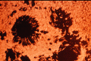
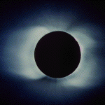
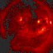
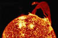

{kind=link}

The New Solar System
Summarizes what we've learned from interplanetary explorations in the last 25 years. My primary reference for The Nine Planets.
The Compact NASA Atlas of the Solar System
This 'road map' of the solar system is the definitive guide for planetary science.
Our Sun is a normal main-sequence G2 star, one of more than 100 billion stars in our galaxy.
diameter: 1,390,000 km.
mass: 1.989e30 kg
temperature: 5800 K (surface)
15,600,000 K (core)
The Sun is by far the largest object in the solar system. It contains more than 99.8% of the total mass of the Solar System (Jupiter contains most of the rest).
It is often said that the Sun is an "ordinary" star. That's true in the sense that there are many others similar to it. But there are many more smaller stars than larger ones; the Sun is in the top 10% by mass. The median size of stars in our galaxy is probably less than half the mass of the Sun.
The Sun is personified in many mythologies: the Greeks called it Helios and the Romans called it Sol.
The Sun is, at present, about 70% hydrogen and 28% helium by mass everything else ("metals") amounts to less than 2%. This changes slowly over time as the Sun converts hydrogen to helium in its core.
The outer layers of the Sun exhibit differential rotation: at the equator the surface rotates once every 25.4 days; near the poles it's as much as 36 days. This odd behavior is due to the fact that the Sun is not a solid body like the Earth. Similar effects are seen in the gas planets. The differential rotation extends considerably down into the interior of the Sun but the core of the Sun rotates as a solid body.
Conditions at the Sun's core (approximately the inner 25% of its radius) are extreme. The temperature is 15.6 million Kelvin and the pressure is 250 billion atmospheres. At the center of the core the Sun's density is more than 150 times that of water.
The Sun's energy output (3.86e33 ergs/second or 386 billion billion megawatts) is produced by nuclear fusion reactions. Each second about 700,000,000 tons of hydrogen are converted to about 695,000,000 tons of helium and 5,000,000 tons (=3.86e33 ergs) of energy in the form of gamma rays. As it travels out toward the surface, the energy is continuously absorbed and re-emitted at lower and lower temperatures so that by the time it reaches the surface, it is primarily visible light. For the last 20% of the way to the surface the energy is carried more by convection than by radiation.
 The surface of the Sun, called the photosphere, is at a temperature of about 5800 K. Sunspots are "cool" regions, only 3800 K (they look dark only by comparison with the surrounding regions). Sunspots can be very large, as much as 50,000 km in diameter. Sunspots are caused by complicated and not very well understood interactions with the Sun's magnetic field.
A small region known as the chromosphere lies above the photosphere.
 The highly rarefied region above the chromosphere, called the corona, extends millions of kilometers into space but is visible only during a total solar eclipse (left). Temperatures in the corona are over 1,000,000 K.
It just happens that the Moon and the Sun appear the same size in the sky as viewed from the Earth. And since the Moon orbits the Earth in approximately the same plane as the Earth's orbit around the Sun sometimes the Moon comes directly between the Earth and the Sun. This is called a solar eclipse; if the alignment is slighly imperfect then the Moon covers only part of the Sun's disk and the event is called a partial eclipse. When it lines up perfectly the entire solar disk is blocked and it is called a total eclipse of the Sun. Partial eclipses are visible over a wide area of the Earth but the region from which a total eclipse is visible, called the path of totality, is very narrow, just a few kilometers (though it is usually thousands of kilometers long). Eclipses of the Sun happen once or twice a year. If you stay home, you're likely to see a partial eclipse several times per decade. But since the path of totality is so small it is very unlikely that it will cross you home. So people often travel half way around the world just to see a total solar eclipse. To stand in the shadow of the Moon is an awesome experience. For a few precious minutes it gets dark in the middle of the day. The stars come out. The animals and birds think it's time to sleep. And you can see the solar corona. It is well worth a major journey.
The Sun's magnetic field is very strong (by terrestrial standards) and very complicated. Its magnetosphere (also known as the heliosphere) extends well beyond Pluto.
 In addition to heat and light, the Sun also emits a low density stream of charged particles (mostly electrons and protons) known as the solar wind which propagates throughout the solar system at about 450 km/sec. The solar wind and the much higher energy particles ejected by solar flares can have dramatic effects on the Earth ranging from power line surges to radio interference to the beautiful aurora borealis.
Recent data from the spacecraft Ulysses show that during the minimum of the solar cycle the solar wind emanating from the polar regions flows at nearly double the rate, 750 kilometers per second, that it does at lower latitudes. The composition of the solar wind also appears to differ in the polar regions. During the solar maximum, however, the solar wind moves at an intermediate speed.
Further study of the solar wind will be done by the recently launched Wind, ACE and SOHO spacecraft from the dynamically stable vantage point directly between the Earth and the Sun about 1.6 million km from Earth.
The solar wind has large effects on the tails of comets and even has measurable effects on the trajectories of spacecraft.
 Spectacular loops and prominences are often visible on the Sun's limb (left).
The Sun's output is not entirely constant. Nor is the amount of sunspot activity. There was a period of very low sunspot activity in the latter half of the 17th century called the Maunder Minimum. It coincides with an abnormally cold period in northern Europe sometimes known as the Little Ice Age. Since the formation of the solar system the Sun's output has increased by about 40%.
The Sun is about 4.5 billion years old. Since its birth it has used up about half of the hydrogen in its core. It will continue to radiate "peacefully" for another 5 billion years or so (although its luminosity will approximately double in that time). But eventually it will run out of hydrogen fuel. It will then be forced into radical changes which, though commonplace by stellar standards, will result in the total destruction of the Earth (and probably the creation of a planetary nebula).
Distance Radius Mass Planet (000 km) (km) (kg) Discoverer Date --------- --------- ------ ------- ---------- ----- Mercury 57,910 2439 3.30e23 Venus 108,200 6052 4.87e24 Earth 149,600 6378 5.98e24 Mars 227,940 3397 6.42e23 Jupiter 778,330 71492 1.90e27 Saturn 1,426,940 60268 5.69e26 Uranus 2,870,990 25559 8.69e25 Herschel 1781 Neptune 4,497,070 24764 1.02e26 Galle 1846 Pluto 5,913,520 1160 1.31e22 Tombaugh 1930More detailed data and definitions of terms can be found on the data page.
... Overview
... Sun
... Mercury
... Spacecraft
... Data